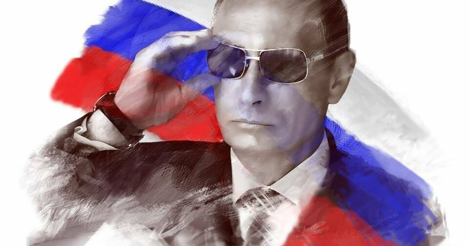
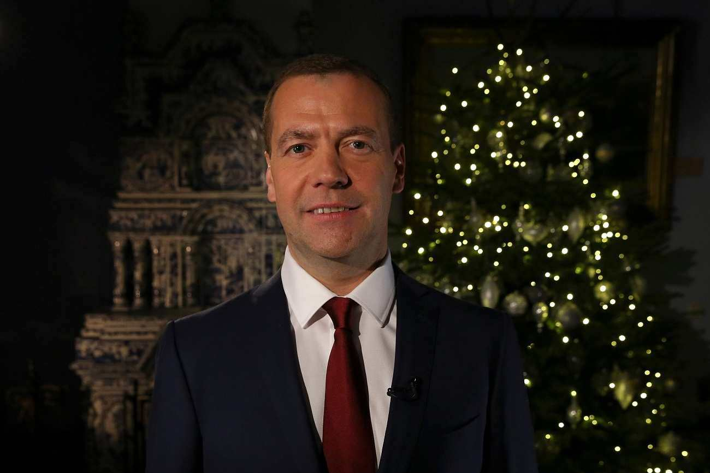
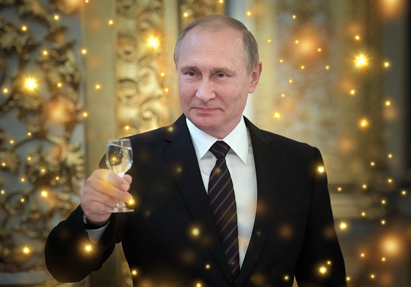
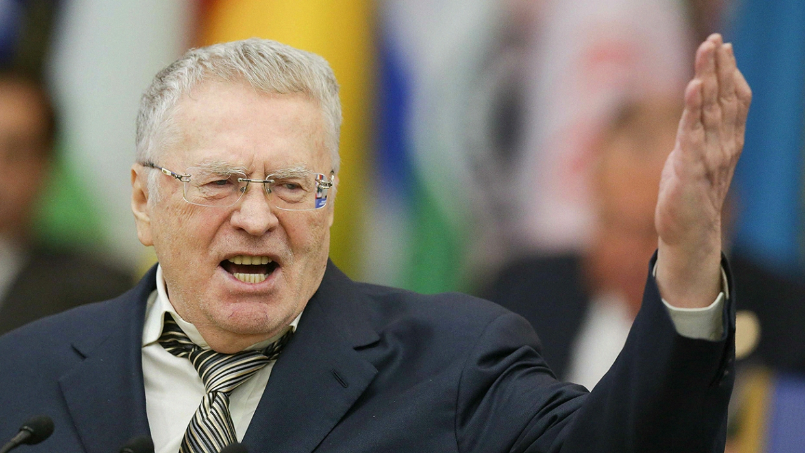

Президент — выборный глава государства в странах с республиканской или смешанной формой правления; избирается на установленный (например, конституцией) срок.
В президентских республиках президент избирается внепарламентским путём: посредством косвенных (США) или прямых (Россия, Аргентина) выборов. В президентских республиках президент обладает обширными фактическими полномочиями, так как он соединяет в своих руках функции главы государства и главы правительства.
В парламентарных республиках президент избирается либо парламентом, либо особой коллегией, основу которой составляют парламентарии. Конституции парламентарных республик (за исключением ЮАР, где президент избирается парламентом и является главой правительства) формально наделяют президента широкими полномочиями, но фактически они осуществляются премьер-министром.

Дмитрий Анатольевич Медведев — российский государственный и политический деятель. Председатель Правительства Российской Федерации с 8 мая 2012 года[6][7][8]. Председатель партии «Единая Россия» с 26 мая 2012 года.
Президент Российской Федерации с 7 мая 2008 по 7 мая 2012. В 2000—2001, 2002—2008 гг. — председатель совета директоров ОАО «Газпром». C 14 ноября 2005 года по 7 мая 2008 года — первый заместитель председателя Правительства Российской Федерации, куратор приоритетных национальных проектов.

Владимир Владимирович Путин — российский государственный и политический деятель, действующий президент Российской Федерации и верховный главнокомандующий Вооружёнными силами Российской Федерации с 7 мая 2012.
Ранее занимал должность президента с 31 декабря 1999 по 7 мая 2008, в 1999—2000 и 2008—2012 годах занимал должность Председателя Правительства Российской Федерации.
Выпускник юридического факультета Ленинградского государственного университета. С 1977 года работал по линии контрразведки в следственном отделе Ленинградского управления КГБ. С 1985 по 1990 год служил в резидентуре советской внешней разведки в ГДР, работал в Дрездене под прикрытием в должности директора дрезденского Дома дружбы СССР—ГДР. 20 августа 1991 года в звании подполковника уволился из КГБ СССР.

Владимир Вольфович Жириновский — советский и российский политик. Руководитель фракции ЛДПР в Государственной Думе Федерального собрания Российской Федерации с 1993 по 2000 и с 2011 года.
Депутат Государственной Думы Федерального собрания Российской Федерации всех созывов (с 12 декабря 1993 года).
Заместитель Председателя Государственной Думы Федерального Собрания РФ (2000—2011), основатель и председатель партии ЛДПР, член Парламентской ассамблеи Совета Европы (ПАСЕ).